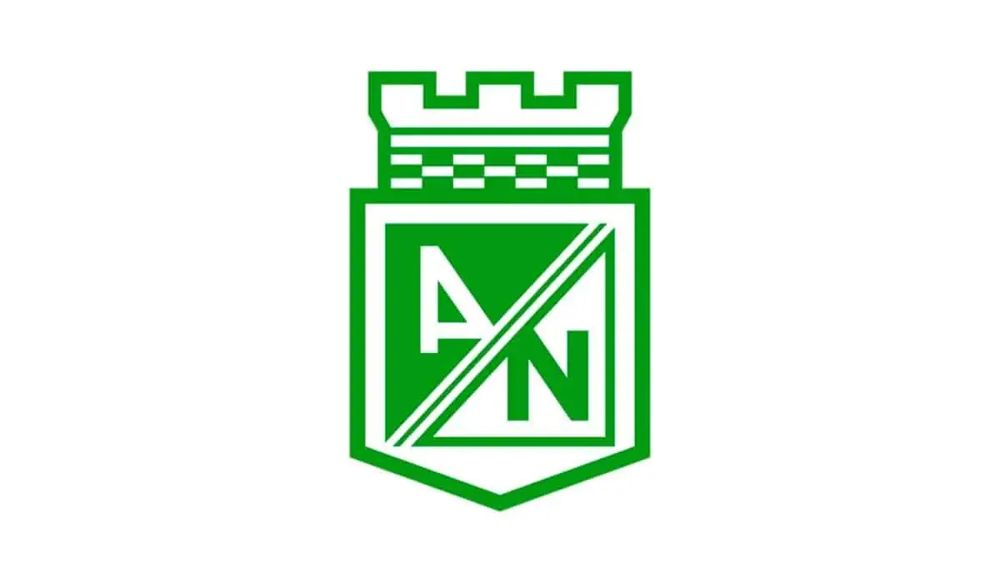
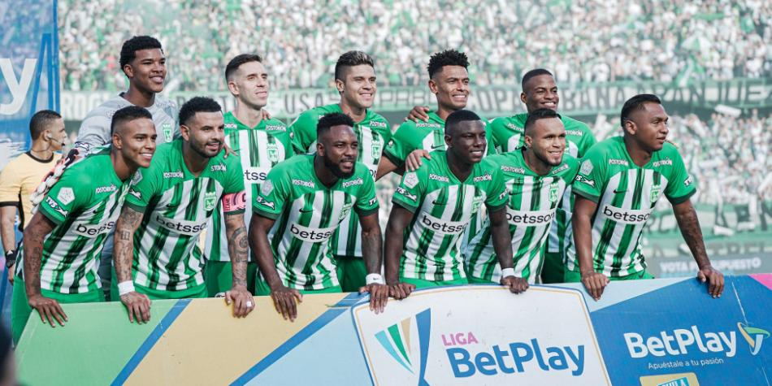
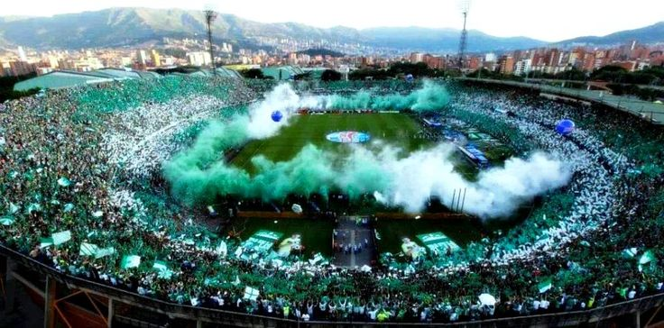

Atlético Nacional se prepara con gran expectativa para enfrentar la Copa Libertadores. Con una plantilla renovada y la dirección técnica confiada, el verde paisa sueña con una nueva hazaña continental.
La hinchada confía en que el equipo pueda superar la fase de grupos con autoridad. Se destacan jugadores como Dorlan Pabón, Jefferson Duque y las jóvenes promesas de la cantera verdolaga.
Nacional ha sido protagonista en varias ediciones de la Copa Libertadores, siendo campeón en 1989 y 2016. Su estilo aguerrido y fiel a su hinchada lo hacen uno de los favoritos de siempre.